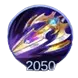
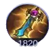
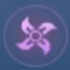

Introdução
Lesley é uma das heroÃnas atiradoras mais fortes e populares de Mobile Legends. Ela se destaca no final do jogo, tornando-se mais poderosa conforme a partida avança.
Este guia abordará suas habilidades, passivas, melhores builds, emblemas, estratégias de jogo e dicas para contra-atacá-la de forma eficaz.
Por Que Escolher Lesley?
Lesley é atualmente uma das melhores heroÃnas atiradoras do jogo, especialmente após os nerfs em Claude e Brody. Ela é uma ótima escolha tanto para ranques mais baixos quanto mais altos, principalmente após o lançamento de sua nova skin aspirante. Sua capacidade de causar alto dano à distância a torna uma heroÃna formidável no final do jogo.
Além disso, seus ataques de longo alcance, habilidade de revelar inimigos e alto dano crÃtico fazem dela uma heroÃna difÃcil de ser contra-atacada quando jogada corretamente. Com o posicionamento e os itens certos, Lesley pode carregar sua equipe rumo à vitória.
Passiva de Lesley: Disparo Letal
A habilidade passiva de Lesley permite que ela cause dano verdadeiro, ignorando efeitos de redução de dano. Se ela não sofrer dano por 5 segundos, seu próximo ataque básico ganha alcance extra, 50% de chance de crÃtico e causa 100 de dano verdadeiro. Além disso, sua passiva converte penetração fÃsica fixa em dano crÃtico extra na taxa de 0,5% por ponto de penetração.
Dicas de Uso: Essa passiva a torna extremamente letal contra alvos frágeis e tanques, pois permite que ela ignore as defesas inimigas com eficiência.
Habilidades de Lesley
Primeira Habilidade: Mestre da Camuflagem
Lesley entra em estado de camuflagem, ganhando regeneração de energia dobrada, 40% de velocidade de movimento extra e 85 de ataque fÃsico adicional por 3 segundos. Essa habilidade melhora seu ataque básico e a torna inalvejável por ataques básicos.
Dicas de Uso: Use essa habilidade para se reposicionar, escapar de emboscadas ou iniciar ataques contra inimigos desprevenidos.
Segunda Habilidade: Granada Tática
Lesley lança uma granada que causa 150 de dano fÃsico e empurra os inimigos para trás. Essa habilidade pode ser usada para interromper certas habilidades inimigas e criar distância.
Dicas de Uso: É especialmente útil contra heróis corpo a corpo que tentam se aproximar. Use com sabedoria para manter seu posicionamento nas lutas.
Habilidade Suprema: Tiro Final
Lesley mira em um alvo e dispara quatro balas, cada uma causando 250 de dano fÃsico mais 5% da vida perdida do inimigo. A habilidade também revela inimigos escondidos nos arbustos.
Dicas de Uso: Use essa habilidade para finalizar inimigos em fuga ou verificar arbustos em busca de inimigos ocultos antes de avançar, prevenindo emboscadas e garantindo um melhor controle do mapa.
Melhores Combos para Lesley
- Atingir o inimigo com um tiro aprimorado da passiva, usar a primeira habilidade, depois a segunda para realizar três tiros aprimorados.
- Usar a suprema, disparar três balas e, antes da última, utilizar a segunda habilidade para aumentar o dano.
- Usar Flash enquanto ativa a suprema para se reposicionar e garantir os acertos.
Melhor Build para Lesley
Fúria do Berserker

Fúria do Guerreiro Selvagem
Aumenta o dano crÃtico de Lesley.

Confronto Sem Fim
Fornece dano verdadeiro extra para Lesley.

Lâmina do Desespero
Item de maior ataque fÃsico para Lesley.

Alabarda dos Mares
Reduz o escudo e a cura dos inimigos.

Vento da Natureza
Concede imunidade temporária ao dano fÃsico, ideal contra heróis fÃsicos.

Meteoro Rosa de Ouro
Fornece um escudo quando Lesley está com pouca vida, útil contra inimigos baseados em magia.

Rugido Maléfico
Ajuda Lesley a penetrar inimigos com alta armadura.
Melhores Emblemas e Talentos
Emblema do Assassino

Emblema do Assassino
Aumenta o dano de Lesley, tornando-a uma finalizadora mais eficaz.
Emblema do Atirador

Emblema do Atirador
Fornece velocidade de ataque e roubo de vida para um dano sustentado maior.

Fatal
Aumenta a chance de crÃtico e o dano crÃtico, potencializando o dano explosivo.

Mestre das Armas
Aumenta o dano fÃsico de todas as fontes para Lesley.

Ignição Letal
Aumenta o dano ao longo do tempo, ideal para estilos de jogo agressivos.
Aceleração Quântica
Melhora a mobilidade e a regeneração, ajudando Lesley a se reposicionar durante as lutas.
Guia de Gameplay da Lesley
InÃcio de Jogo
Lesley é fraca no começo do jogo. Foque em farmar, incomodar inimigos com sua passiva e primeira habilidade e evitar confrontos diretos.
Meio de Jogo
Farmar e empurrar rotas sempre que possÃvel. Comece a participar das lutas quando tiver os itens principais, mas evite avançar demais.
Final de Jogo
Lesley se torna extremamente poderosa, causando dano massivo até mesmo em tanques. Jogue com segurança, evite andar sozinha e posicione-se bem nas lutas.
Sinergia com Outros Heróis
Lesley funciona bem com heróis que fornecem controle de grupo e proteção. Alguns ótimos aliados incluem:
- Tigreal - Seu controle de grupo mantém os inimigos parados para o dano de Lesley.
- Angela - Pode fornecer escudos e aumentar a sobrevivência de Lesley.
- Franco - Pode puxar inimigos para que Lesley finalize facilmente.
Dicas para Counterar Lesley
- Use assassinos como Ling, Helcurt ou Natalia para eliminá-la antes que ela cause dano.
- Heróis com controle de grupo (Franco, Khufra) podem imobilizá-la e impedir sua fuga.
- Use itens como Vento da Natureza para anular seu dano fÃsico por um curto perÃodo.
Conclusão
Dominar Lesley exige conhecimento sobre sua passiva, habilidades e melhores builds. Com as estratégias certas, ela pode se tornar uma força imparável em Mobile Legends. Seja para dominar o final do jogo ou para counterá-la com eficácia, seguir este guia lhe dará a vantagem necessária para vencer.

 Brody
Brody

 Guia do Claude Mobile Legends
Guia do Claude Mobile Legends
 Guia da Layla Mobile Legends
Guia da Layla Mobile Legends